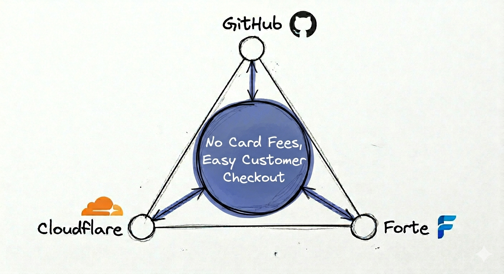

How I set up a low‑fee invoice payment page that doesn’t make the customer sign into their bank.

PROBLEM: Accepting credit‑cards is toxic for contractors
Most service contractors see no sales uplift from accepting credit‑card payments. Service invoicing moves slowly and customers rarely seek professional services without available funds.
The 3% credit‑card fee is expensive, but it also applies to reimbursement for expenses. If expenses make up a third of the invoice, the effective processing fee reaches 4.5%.
SOLUTION: Why A Different Payment Processor Makes Sense.
Exclusively accepting eChecks significantly reduces fees, but popular processors like Stripe require customers to sign into their personal bank accounts through a window launched by the payment provider. This is uncomfortable and difficult and may delay prompt payment if there is no credit card option available for the customer to fall back on.
Adding a 3% card surcharge to cover processing costs is not viable, as popular payment processors do not support differential pricing for cards versus eChecks, and recent industry rule changes have restricted available workarounds.
My solution is to exclusively accept ACH payments, and to do so using the payment processor Forte CSG which can be configured to offer an easy checkout process for the customer.
Here is my reasoning:

Please note that Forte has a merchant setup process which is alot more complicated than providers like Stripe or Paypal.
IMPLEMENTATION: Launching Forte Checkout On A Static Github Page Using A Cloudflare Worker As Serverless Backend
Payment workflow:
Step 1. The admin user generates a payment link by posting invoice details to the worker, which encrypts the data and returns a URL containing both plaintext parameters and an encrypted token. This payment link is then emailed to the customer along with a detailed invoice.
Step 2. The customer then opens the link which loads on a static Github page. The static site uses client-side javascript to send both the token and the plaintext parameters back to the worker which verifies the authenticity of the request by comparing the plaintext values with the contents of the encrypted token. Upon request verification, it performs some additional tasks and returns a signed token necessary to initialize the Checkout button.
Step 3. The customer is greeted with a professional payment page and a button that essentially says "Pay Now". Upon opening the portal, all payment related details are handed off to Forte.

Code
Static site repository: https://github.com/ZimChi/TheSquareRepair
Cloudflare Worker repository: https://github.com/ZimChi/cf-worker-static-bridge